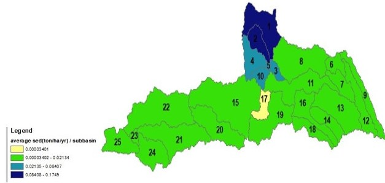
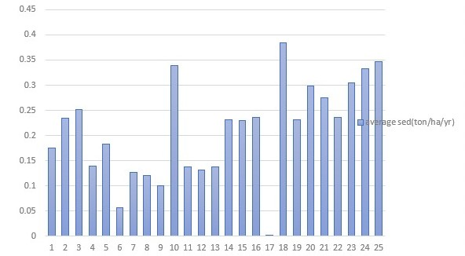
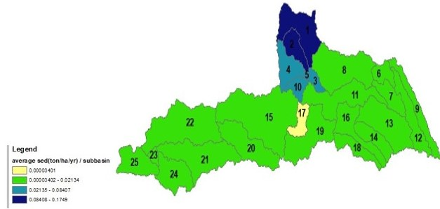
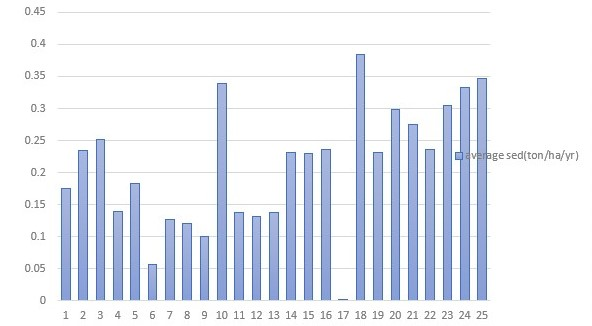
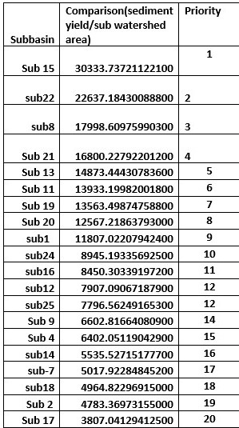
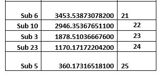
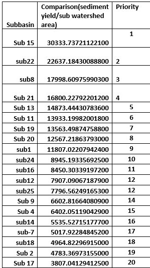
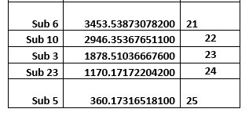

Project Description:
The Project Involved the use of rainfall,precipitation,temperature,humidity and streamflow data to simulate hydrological processes within the River Yala catchment by the use of SWAT Model.The model outputs would be surface runoff,and sediment yield data for each sub basins for the period of Simulation.
Project Objectives:
- Model hydrological Processes within the River Yala Catchment For period(2010-2022)Using Historical Weather,hydrological and Physical Data
- Ranks Subwatersheds within The River Yala Catchment Based on their need and priority For conservation.
- Simulate Future Scenarios of sediment Yield and Surface Runoff Within the River Yala Catchment.
Study Area:
.The Yala river basin is located in western parts of Kenya and drain into Lake Victoria in Siaya County ,River Yala originates in Nandi Escarpment in Rift Valley and flows west for 219 kilometers to its Mouth in Lake Victoria .River Yala has an average discharge of 27.4 cubic meters per second.The project examimed the hydrological processes to inform conservation of subwatershed in River Yala Catchment.
The Yala river basin is located in western parts of Kenya and drain into Lake Victoria in Siaya County ,River Yala originates in Nandi Escarpment in Rift Valley and flows west for 219 kilometers to its Mouth in Lake Victoria .River Yala has an average discharge of 27.4 cubic meters per second..The project examimed the hydrological processes to inform conservation of subwatershed in River Yala Catchment.
Data:
Variety of data were used including:Landcover data,Soil Data,weather data(max & min Temperature,himidity,preciptitation,windspeed,solar radiation),Hydrological data(Streamflow data) & Digital Elevation Model(DEM)
Methods:
Results:
Below are the reclassified results for average surface Runoff and average sediment Yield(ton/ha/year),validation and calibration of model and their corresponding areas. The final prioritization is done based on the amount of sediment yield compared to the area Of sub watershed i.e amount of subwatershed sediment Yield contribution to the main outlet
 





 




Conclusions:
SWAT Model was successfully applicable in simulating surface runoff and sediment Yield within River Yala Catchment
Increases in population, fire, and vegetation are especially prominent in Katavi, meanwhile Ruaha is demonstrating a high increase in precipitation and surface water.
The Mixed Use area is showing both increasing and decreasing trends across the landscape. Specifically, there is a notable decrease in fire and surface water.
SWAT Model was succesfully applicable in simulating surface runoff and sediment Yield in the River Yala Catchment
Location
Nakuru,KenyaPlease feel free to contact me though email:sangpatrick211@gmail.com or through:0790835786